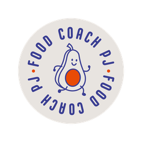
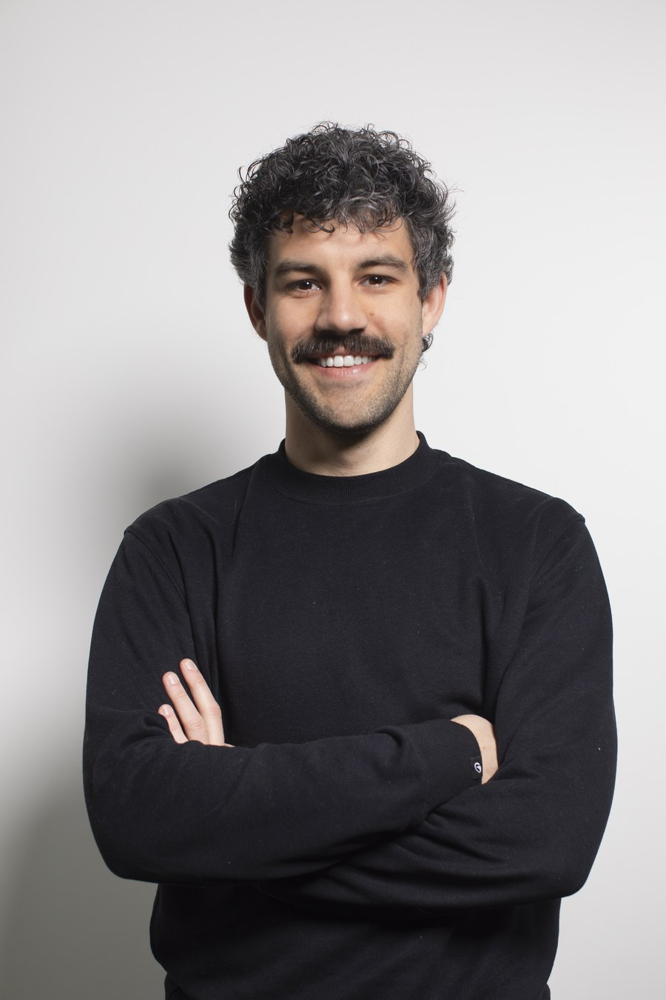

Food Coach PJDaarom werk ik met een vast traject: één stap per keer, met opvolging, zodat het ook echt blijft hangen.
Dat ligt zelden aan jou. Als je elke keer opnieuw moet beslissen om terug te komen, is dat het moment waarop het vaak misloopt. Daarom ligt je traject bij mij vast vanaf de intake.
We nemen de tijd om jou en je situatie te leren kennen. Ik geef nog geen volledig advies.
Je krijgt één eenvoudige opdracht mee, zodat we verder werken met wat er echt gebeurt.
Per afspraak pakken we één aanpassing aan. Zo blijft het haalbaar en blijft het hangen.
We bekijken wat werkt, stellen bij waar nodig en sluiten samen af.
Je intake is het eerste gesprek van je traject. Je betaalt je traject vooraf, bij de intake. Alle afspraken lees je in de algemene voorwaarden.
"Toegankelijke coach. Bekijkt hoe je stap per stap aan een nieuw eetpatroon kan werken. Geen klassieke dieetregels maar op maat van je noden."
"Ben heel blij dat ik Pieter-Jan ben tegengekomen in de voorbereiding van mijn eerste Ironman. Hij brengt helder advies qua voeding, waardoor ik meer energie heb tijdens en na de trainingen."
"PJ hielp mij niet enkel met het klaarstomen van mijn summer-body, maar gaf mij ook een betere, gezondere eetgewoonte mee. Leuk om te weten dat je niet alles moet laten en toch gezond kan zijn!"

Ik ben Pieter-Jan, papa van twee, en ooit was ik het tegenovergestelde van wie ik nu ben.
In 2017 besloot ik mijn leven om te gooien. Wat begon met lopen, groeide uit tot triatlon, swimrun en nu zelfs ultralopen en crossfit. In 2024 behaalde ik mijn diploma als voedingsdeskundige.
Ik weet uit ervaring dat blijvende verandering nooit in één keer lukt, wel stap voor stap, volgehouden. Geen strenge regels, geen schuldgevoel bij eens lekker genieten. Wel een haalbare, duurzame weg.
Een gesprek van ongeveer 60 minuten waarin ik vooral luister. Je krijgt één oefening mee naar huis en we plannen meteen je volgende afspraak.
Bij de intake, voor het volledige traject. Dat kan via overschrijving of ter plaatse. Daarna ligt alles vast en hoef je er niet meer aan te denken.
Ja, als je dit minstens 48 uur op voorhand laat weten. Meer details lees je in de algemene voorwaarden.
Niet per se. Je kan je traject ook volledig online volgen via videogesprek.
Consultaties bij kinesitherapiepraktijk Kineco.
Consultaties bij kinesitherapiepraktijk Reboost, in Kruishoutem.
Een volledige sessie via videogesprek, even persoonlijk en zonder verplaatsing.
Liever eerst iets vragen? Mail naar info@foodcoachpj.be of bel +32 499 28 50 28.